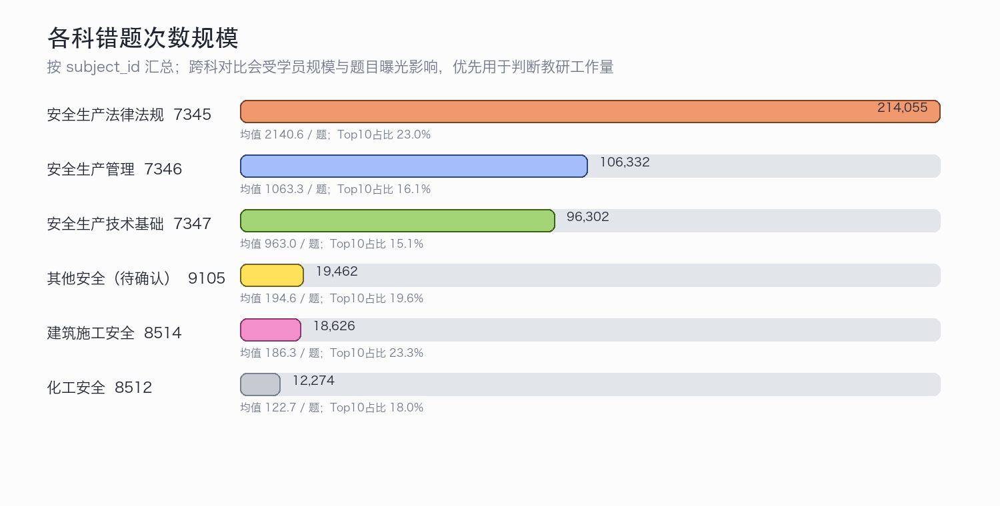
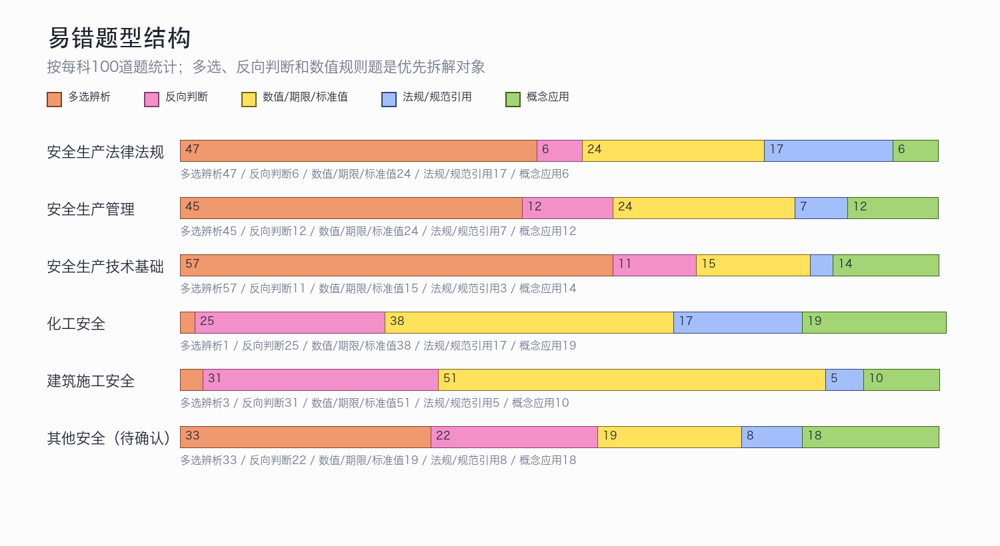
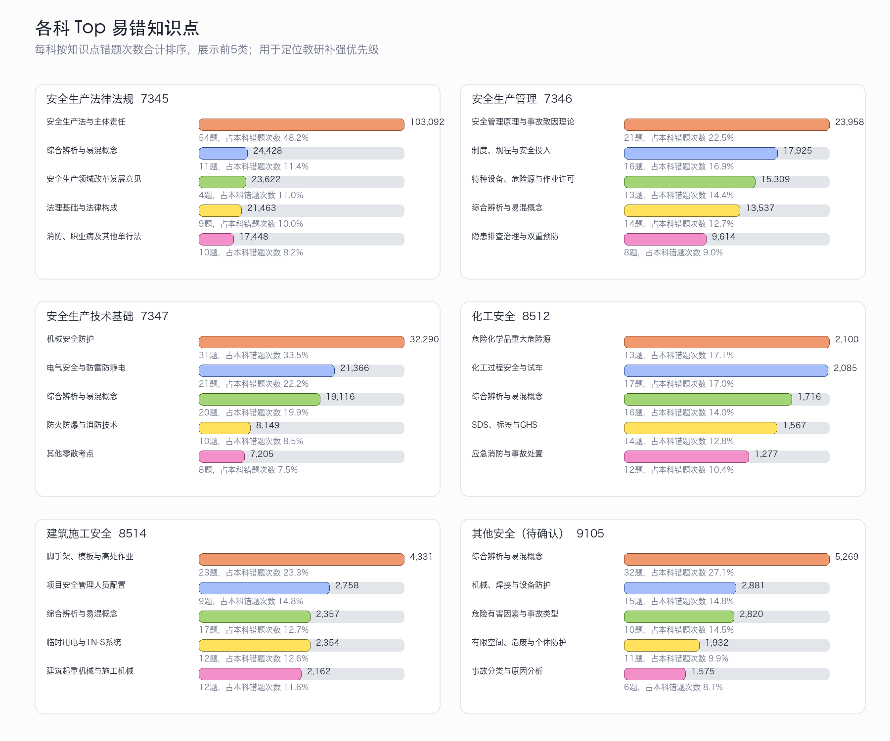

中级注安6月易错题分析报告
基于《注安各科目前百错题.xlsx》Result 1 主表，样本为6个 subject_id 各100道高频错题；生成日期：2026-06-26。
Executive Summary
错题工作量集中在公共科目。 安全生产法律法规错题次数合计 214,055，安全生产管理为 106,332，两科占全部错题次数的 68.6%。这说明6月教研补强应先覆盖法规条文、管理原理、事故致因和隐患判定。
真正的问题不是“不会背”，而是易混条款和场景辨析不稳。 高频错题集中在改革发展意见、安全生产法、重大隐患判定、机械/电气防护、重大危险源、建筑人员配置等考点，题目通常通过反向判断、多选和场景条件隐藏关键变量。
各专业科目需要按“标准规则 + 场景条件”重做讲评。 化工、建筑、其他安全的错题量较公共科低，但高错题多指向新规、临界量、人员配置、TN-S、危险有害因素分类等规则性强的考点，适合做短专题和错选项拆解。
报告中的科目名称有一处需要确认。 文件只有 subject_id，没有科目中文名和章节标签；7345、7346、7347、8512、8514按题干可较稳定推断，9105暂按“其他安全”处理，建议后续补充正式映射和章节标签。
公共科目承担了主要错题压力，但跨科比较要谨慎
法规和管理两科的错题次数显著高于专业科目，优先级更像“教研工作量”而不是单纯难度。 由于表里没有学员基数、题目曝光次数和作答人数，错题次数不能直接等同于错题率；更稳妥的用法是：先按本科内排序找补强点，再用跨科总量安排讲评资源。

图1：按科目汇总错题次数，显示当前讲评和教研修订的工作量优先级。
| 科目 | subject_id | 题量 | 错题次数合计 | 均错/题 | 最高错题次数 | Top10集中度 | 题型风险 |
|---|---|---|---|---|---|---|---|
| 安全生产法律法规 | 7345 | 100 | 214,055 | 2140.6 | 8,425 | 23.0% | 47多选 / 6反向 |
| 安全生产管理 | 7346 | 100 | 106,332 | 1063.3 | 2,183 | 16.1% | 45多选 / 12反向 |
| 安全生产技术基础 | 7347 | 100 | 96,302 | 963.0 | 2,119 | 15.1% | 57多选 / 11反向 |
| 其他安全（待确认） | 9105 | 100 | 19,462 | 194.6 | 465 | 19.6% | 33多选 / 22反向 |
| 建筑施工安全 | 8514 | 100 | 18,626 | 186.3 | 737 | 23.3% | 3多选 / 31反向 |
| 化工安全 | 8512 | 100 | 12,274 | 122.7 | 300 | 18.0% | 1多选 / 25反向 |
多选、反向判断和数值规则题是主要失分形态
题型结构显示，学员在“多个正确项是否完整”“错误项如何识别”“标准数字是否适用”上最容易失分。 法规和技术基础的多选辨析更突出，管理、化工、建筑则同时受反向判断和规则引用影响。讲评时不宜只给正确答案，应把每个选项对应到“为什么选/为什么不选”。

图2：每科100道题的题型关注点结构。分类基于题干和答案字段的规则识别。
知识点补强应从每科 Top 3 开始
Top知识点反映的是“当前最值得改课和加练”的地方。 法规优先拆条文和政策文件，管理优先拆事故致因与重大隐患判定，技术基础优先拆机械/电气/特种设备，化工优先拆重大危险源和试车条件，建筑优先拆人员配置、重大隐患、临电系统，其他安全优先拆事故分类和危险有害因素辨识。

图3：每科按知识点错题次数合计排序，展示前5类。
| 科目 | 优先补强知识点 | 题量 | 错题次数 | 问题判断 | 教研改进方向 |
|---|---|---|---|---|---|
| 安全生产法律法规 | 安全生产法与主体责任 | 54 | 103,092 | 条文主体、义务、罚则、事故等级边界交叉，学员容易记住关键词但不稳。 | 建立“主体-义务-行为-后果”条文卡，配套新旧/易混条款对照和反向判断训练。 |
| 安全生产法律法规 | 综合辨析与易混概念 | 11 | 24,428 | 属于跨章节综合辨析，当前数据无法进一步定位到教材小节，需要补充章节标签。 | 建立“主体-义务-行为-后果”条文卡，配套新旧/易混条款对照和反向判断训练。 |
| 安全生产法律法规 | 安全生产领域改革发展意见 | 4 | 23,622 | 宏观政策、法理概念和制度清单容易被当作纯记忆点，选项替换后辨析能力不足。 | 建立“主体-义务-行为-后果”条文卡，配套新旧/易混条款对照和反向判断训练。 |
| 安全生产管理 | 安全管理原理与事故致因理论 | 21 | 23,958 | 事故致因理论和管理原则与案例的对应关系不牢，容易被情境材料干扰。 | 用案例短材料训练“理论关键词→事故链条→控制措施”的三步判断，减少概念孤立讲解。 |
| 安全生产管理 | 制度、规程与安全投入 | 16 | 17,925 | 属于跨章节综合辨析，当前数据无法进一步定位到教材小节，需要补充章节标签。 | 补充章节标签后再拆到小节，先按代表题建立易错选项库。 |
| 安全生产管理 | 特种设备、危险源与作业许可 | 13 | 15,309 | 设备场景多、风险源与防护措施一一对应关系弱，多选题漏选错选明显。 | 增加设备结构图、危险部位标注和防护措施匹配练习，多选题按选项逐项归因讲评。 |
| 安全生产技术基础 | 机械安全防护 | 31 | 32,290 | 设备场景多、风险源与防护措施一一对应关系弱，多选题漏选错选明显。 | 增加设备结构图、危险部位标注和防护措施匹配练习，多选题按选项逐项归因讲评。 |
| 安全生产技术基础 | 电气安全与防雷防静电 | 21 | 21,366 | 设备场景多、风险源与防护措施一一对应关系弱，多选题漏选错选明显。 | 增加设备结构图、危险部位标注和防护措施匹配练习，多选题按选项逐项归因讲评。 |
| 安全生产技术基础 | 综合辨析与易混概念 | 20 | 19,116 | 属于跨章节综合辨析，当前数据无法进一步定位到教材小节，需要补充章节标签。 | 补充章节标签后再拆到小节，先按代表题建立易错选项库。 |
| 化工安全 | 危险化学品重大危险源 | 13 | 2,100 | 判定标准、临界量、责任人和排查频次等规则集中，细节差异导致失分。 | 做判定流程图和阈值表，课堂中加入“为什么不是重大隐患/重大危险源”的反例。 |
| 化工安全 | 化工过程安全与试车 | 17 | 2,085 | 新规、标准术语和化工流程节点混在一起，单点记忆难以迁移到案例题。 | 围绕重点监管工艺、SDS/GHS、试车条件做流程卡，并单独讲清新规关键词。 |
| 化工安全 | 综合辨析与易混概念 | 16 | 1,716 | 属于跨章节综合辨析，当前数据无法进一步定位到教材小节，需要补充章节标签。 | 围绕重点监管工艺、SDS/GHS、试车条件做流程卡，并单独讲清新规关键词。 |
| 建筑施工安全 | 脚手架、模板与高处作业 | 23 | 4,331 | 规范数字、人员配置和危险等级判断规则多，题目常用场景条件隐藏关键变量。 | 把规范数字和适用条件做成场景判断表，专题训练“条件识别→规范条款→答案”。 |
| 建筑施工安全 | 项目安全管理人员配置 | 9 | 2,758 | 规范数字、人员配置和危险等级判断规则多，题目常用场景条件隐藏关键变量。 | 把规范数字和适用条件做成场景判断表，专题训练“条件识别→规范条款→答案”。 |
| 建筑施工安全 | 综合辨析与易混概念 | 17 | 2,357 | 属于跨章节综合辨析，当前数据无法进一步定位到教材小节，需要补充章节标签。 | 把规范数字和适用条件做成场景判断表，专题训练“条件识别→规范条款→答案”。 |
| 其他安全（待确认） | 综合辨析与易混概念 | 32 | 5,269 | 属于跨章节综合辨析，当前数据无法进一步定位到教材小节，需要补充章节标签。 | 用分类树整合事故类型、危险有害因素和矿山/电气场景，强化案例归类边界。 |
| 其他安全（待确认） | 机械、焊接与设备防护 | 15 | 2,881 | 设备场景多、风险源与防护措施一一对应关系弱，多选题漏选错选明显。 | 增加设备结构图、危险部位标注和防护措施匹配练习，多选题按选项逐项归因讲评。 |
| 其他安全（待确认） | 危险有害因素与事故类型 | 10 | 2,820 | 分类框架和事故原因层级相近，学员在概念边界和案例归类上不稳定。 | 用分类树整合事故类型、危险有害因素和矿山/电气场景，强化案例归类边界。 |
教研改进方向：从讲答案转成讲判断路径
- 建立6月易错知识点清单。 每科先锁定Top 3知识点，形成“代表题-错因-易混项-讲评话术-加练题”五列表。
- 公共科目做条文和理论的结构化复盘。 法规按“主体、义务、责任、罚则”拆卡；管理按“理论关键词、事故链条、控制措施”拆案例。
- 专业科目做场景条件识别训练。 化工突出重大危险源、SDS/GHS、试车条件；建筑突出人员配置、临时用电、重大隐患判定；技术基础突出设备危险部位和防护措施匹配。
- 每道高错题保留错选项拆解。 对多选题记录漏选项，对反向判断题记录干扰词，对数值题记录适用条件，避免下一轮只重复刷题。
- 下一版数据增加章节和作答分母。 加入章节、知识点、正确率、作答人数、班型/阶段后，可以从“错题次数分析”升级为“错因和教学效果追踪”。
代表性高错题清单
这些题适合作为每科讲评入口。 下表每科取错题次数最高的3道题，便于教研先建立样例库和讲评模板。
| 科目 | question_id | 错题次数 | 归类知识点 | 题型 | 代表题干 |
|---|---|---|---|---|---|
| 安全生产法律法规 | 2778452 | 8,425 | 安全生产领域改革发展意见 | 多选辨析 | 《中共中央国务院关于推进安全生产领域改革发展的意见》中指出，推进安全生产领域改革发展，建立安全预防控制体系，具体包括（）。 |
| 安全生产法律法规 | 2907988 | 6,020 | 安全生产领域改革发展意见 | 概念应用 | 《中共中央国务院关于推进安全生产领域改革发展的意见》提出，安全生产领域改革发展的基本原则是 ( ) |
| 安全生产法律法规 | 2778468 | 5,490 | 安全生产领域改革发展意见 | 反向判断 | 《中共中央国务院关于推进安全生产领域改革发展的意见》以问题为导向，提出了五方面制度性改革举措和工作要求，下列制度中不属于安全改革发展制度的是（）。 |
| 安全生产管理 | 4043875 | 2,183 | 安全管理原理与事故致因理论 | 多选辨析 | 在生产系统的设计过程中需要考虑能量隔离措施，以避免因能量意外释放达及人体，导致人身伤害事故。根据能量意外释放理论，下列观点中，符合该理论的有（ ）。（2025真题） |
| 安全生产管理 | 4043111 | 2,065 | 隐患排查治理与双重预防 | 数值/期限/标准值 | 某省安委会在2022年全国“安全生产月”期间，组织工贸和矿山行业的专家，进行现场督查时，发现某集团公司下属企业存在以下生产安全事故隐患：根据工贸和矿山行业类重大生产事故隐患判定标准，全部隐患属于重大事故隐患的是（ ）。 |
| 安全生产管理 | 3910783 | 1,886 | 安全管理原理与事故致因理论 | 多选辨析 | … |
| 安全生产技术基础 | 4043805 | 2,119 | 机械安全防护 | 多选辨析 | 旋转机械的运动部位是最容易造成卷入危险的部位，为此，应针对不同类型的机械采取不同的防护措施以减少卷入危险的发生，下列针对机械转动部位的防卷入措施的要求中，正确的有（ ）。 |
| 安全生产技术基础 | 3873989 | 1,516 | 机械安全防护 | 多选辨析 | 某机械加工厂对全厂冲床进行技术升级改造，重点针对安全隐患进行治理。增设光电保护装置，提高了安全性能。关于光电保护装置的说法，正确的有（ ）。 |
| 安全生产技术基础 | 4049256 | 1,439 | 电气安全与防雷防静电 | 多选辨析 | 关于电力变压器运行安全技术要求的说法，正确的有（ ）。 |
| 化工安全 | 3337629 | 300 | 化学灼伤与职业健康 | 概念应用 | 某化工企业的员工可能接触到环氧树脂、苯、苯酚、硫黄等危险化学品。下列伤害类型中，属于化学灼伤的是（ ）。 |
| 化工安全 | 3966515 | 279 | 危险化学品重大危险源 | 数值/期限/标准值 | 【新】根据危险化学品重大危险源包保责任制规定，重大危险源的技术负责人应当（ ）组织对重大危险源进行针对性安全风险隐患排查。 |
| 化工安全 | 3966495 | 251 | 化工过程安全与试车 | 反向判断 | 【新】某化工企业准备进行联动试车，根据《化工安全管理规定》，联动试车应具备的条件不包括（ ）。 |
| 建筑施工安全 | 4045824 | 737 | 项目安全管理人员配置 | 反向判断 | 项目安全总监应当具备的条件不包括的是（）。 |
| 建筑施工安全 | 4045828 | 651 | 项目安全管理人员配置 | 数值/期限/标准值 | 某施工总承包企业承建一项市政基础设施工程项目，工程合同价款为6亿元，施工活动涉及建筑起重机械。施工期间在岗履职的专职安全生产管理人员人数至少应为（）。 |
| 建筑施工安全 | 4048834 | 469 | 重大事故隐患判定标准 | 多选辨析 | 《房屋市政工程重大事故隐患判定标准2024版》是根据（）等法律法规制定。 |
| 其他安全（待确认） | 4118147 | 465 | 建设项目与施工安全管理 | 多选辨析 | 根据建设项目施工安全管理要求，施工单位项目负责人应当履行的安全管理职责有（ ）。 |
| 其他安全（待确认） | 4117813 | 451 | 事故分类与原因分析 | 概念应用 | 地下水大量涌入矿井采空区造成损失，该事故属于（）。 |
| 其他安全（待确认） | 4117885 | 442 | 建设项目与施工安全管理 | 多选辨析 | 下列安全管理措施中，属于 “制度 - 审批” 环节核心要求的有（ ）。 |
后续需要补齐的问题
- 9105 的正式科目名称需要确认，目前按题干主题暂归为“其他安全”。
- 需要补充章节/知识点标准映射，才能把当前规则归类升级为教材章节级分析。
- 需要作答人数、曝光量和正确率，才能判断“高错题次数”到底来自难度、流量，还是某批学员集中薄弱。
- 如果能拿到学员错选项分布，可以进一步判断是漏选、误选、反向题误读，还是标准数字记忆错误。
口径和假设
本报告只使用 Excel 中已有字段：subject_id、question_id、题干、选项内容、正确答案、错题次数。知识点归类来自题干关键词规则，不等同于官方章节标签；跨科错题次数受学员规模和题目曝光影响，不建议直接解释为科目难度。